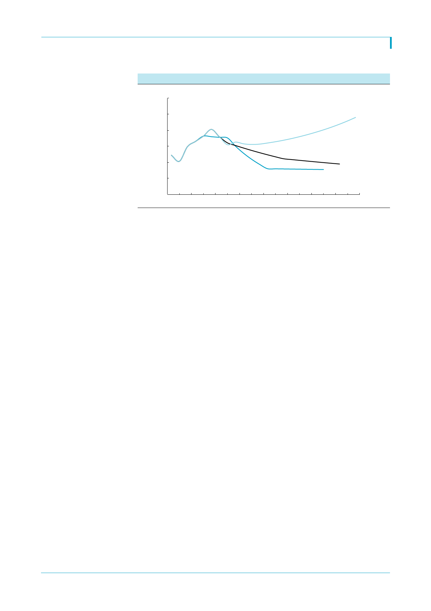

한국가스공사(036460)
[그림 4] 발전용 LNG수요 예측 – 연평균 2.6% 늘어나는 전망으로
(천톤)
30,000
25,000
20,000
2016~2031
CAGR +2.6%
13차(추정)
15,000
10,000
5,000
12차
천연가스수급계획
11차
천연가스수급계획
0
2008
2011
2014 2017F 2020F 2023F 2026F 2029F
주: 13차 천연가스수급계획 전망치는 8차 전력수급계획에서 LNG발전 비중이 늘어나는 것을 반영해 추정
자료: 12,13차 천연가스수급계획, 한국투자증권
기업개요
가스공사는 우리나라에 천연가스를 독점적으로 수입하는 업체로 POSCO 에너지, SK E&S, 한국중부발전(한전 자회사)을
제외한 모든 법인은 가스공사가 수입한 천연가스를 사용하고 있음. 우리나라의 가스시장 구조는 가스공사가 액화천연가스
를 수입해 일정 마진을 붙여 도시가스용과 발전용으로 판매하는 것이며, 도시가스용 천연가스는 민간회사 또는 국민들이
산업용, 난방용, 취사용 등으로 사용하며, 발전용 천연가스는 한국전력 발전자회사 및 민간 발전회사들이 발전연료로 사
용함. 가스공사는 보유하고 있는 설비자산에 대해 정부와 협의된 일정 마진(=투자보수)을 취할 뿐 LNG수입가격의 변동
이 이익에 미치는 영향이 없는 매우 안정적인 수익구조를 갖고 있음. 다만 IFRS 연결기준 영업이익의 약 7%를 차지하는
해외 E&P 부문이 유가에 영향 받을 수 있음
4